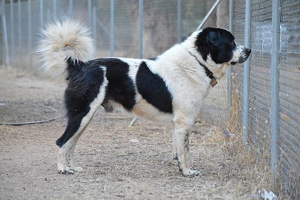
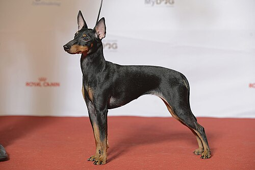
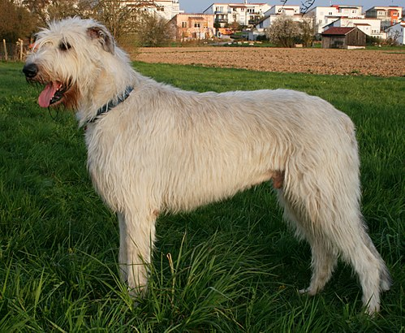

Наши домашние животные:
-
Греческая овчарка
Греческая овчарка (греч. Ελληνικός Ποιμενικός) — это порода собак, выведенная в горных регионах Греции и традиционно используемая местными пастухами для помощи при охране скота. И для боёв. Греческая овчарка принадлежит к группе средних и крупных пород, обладает сильным, развитым и мускулистым телом. Эта собака может справиться с волком в одиночку.
-
Английский той-терьер
Английский той-терьер (англ. english toy terrier, англ. toy «игрушка»[1]) — порода собак, мелкий гладкошёрстный терьер. Выведен в Великобритании, признан Английским клубом собаководства (отнесён к группе той-пород). Английский той-терьер выведен на основе старого английского черно-подпалого терьера, его происхождение тесно переплетается с историей другой, более крупной, породы манчестер-терьер.
-
Ирландский волкодав
Ирландский волкодав (англ. Irish wolfhound, ирл. Cú Faoil) — порода охотничьих собак. Одна из самых больших собак в мире. Ирландские волкодавы использовались для травильной охоты на крупную дичь — волков и оленей. Характер спокойный, добрый.